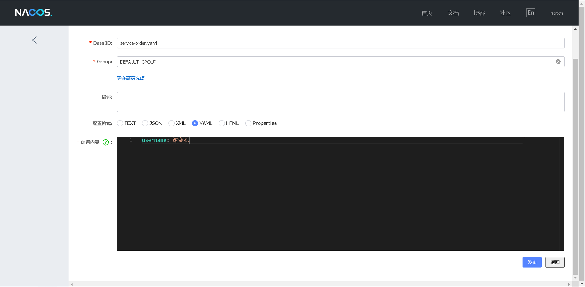

Spring Cloud Alibaba 致力于提供微服务开发的一站式解决方案。此项目包含开发分布式应用微服务的必需组件，方便开发者通过 Spring Cloud 编程模型轻松使用这些组件来开发分布式应用服务。
依托 Spring Cloud Alibaba，您只需要添加一些注解和少量配置，就可以将 Spring Cloud 应用接入阿里微服务解决方案，通过阿里中间件来迅速搭建分布式应用系统。
主要功能
- 服务限流降级：默认支持 WebServlet、WebFlux, OpenFeign、RestTemplate、Spring Cloud Gateway, Zuul, Dubbo 和 RocketMQ 限流降级功能的接入，可以在运行时通过控制台实时修改限流降级规则，还支持查看限流降级 Metrics 监控。
- 服务注册与发现：适配 Spring Cloud 服务注册与发现标准，默认集成了 Ribbon 的支持。
- 分布式配置管理：支持分布式系统中的外部化配置，配置更改时自动刷新。
- 消息驱动能力：基于 Spring Cloud Stream 为微服务应用构建消息驱动能力。
- 分布式事务：使用 @GlobalTransactional 注解， 高效并且对业务零侵入地解决分布式事务问题。。
- 阿里云对象存储：阿里云提供的海量、安全、低成本、高可靠的云存储服务。支持在任何应用、任何时间、任何地点存储和访问任意类型的数据。
- 分布式任务调度：提供秒级、精准、高可靠、高可用的定时（基于 Cron 表达式）任务调度服务。同时提供分布式的任务执行模型，如网格任务。网格任务支持海量子任务均匀分配到所有 Worker（schedulerx-client）上执行。
- 阿里云短信服务：覆盖全球的短信服务，友好、高效、智能的互联化通讯能力，帮助企业迅速搭建客户触达通道。
更多功能请参考 Roadmap。
组件
Sentinel：把流量作为切入点，从流量控制、熔断降级、系统负载保护等多个维度保护服务的稳定性。
Nacos：一个更易于构建云原生应用的动态服务发现、配置管理和服务管理平台。
RocketMQ：一款开源的分布式消息系统，基于高可用分布式集群技术，提供低延时的、高可靠的消息发布与订阅服务。
Dubbo：Apache Dubbo™ 是一款高性能 Java RPC 框架。
Seata：阿里巴巴开源产品，一个易于使用的高性能微服务分布式事务解决方案。
Alibaba Cloud OSS: 阿里云对象存储服务（Object Storage Service，简称 OSS），是阿里云提供的海量、安全、低成本、高可靠的云存储服务。您可以在任何应用、任何时间、任何地点存储和访问任意类型的数据。
Alibaba Cloud SchedulerX: 阿里中间件团队开发的一款分布式任务调度产品，提供秒级、精准、高可靠、高可用的定时（基于 Cron 表达式）任务调度服务。
Alibaba Cloud SMS: 覆盖全球的短信服务，友好、高效、智能的互联化通讯能力，帮助企业迅速搭建客户触达通道。
更多组件请参考 Roadmap。
如何引入依赖
如果需要使用已发布的版本，在 dependencyManagement 中添加如下配置。
1 | <dependencyManagement> |
Nacos 注册中心
Nacos 是阿里巴巴开源的一个更易于构建云原生应用的动态服务发现、配置管理和服务管理平台。
首先，修改 pom.xml 文件，引入 Nacos Discovery Starter。
1
2
3
4<dependency>
<groupId>com.alibaba.cloud</groupId>
<artifactId>spring-cloud-starter-alibaba-nacos-discovery</artifactId>
</dependency>在应用的 /src/main/resources/application.yml配置文件中配置 Nacos Server 地址
1
2
3
4
5
6
7
8
9
10
11
12
13
14
15
16
17server:
port: 8080
spring:
application:
name: service-order
cloud:
nacos:
discovery:
server-addr: localhost:8848
management:
endpoints:
web:
exposure:
include: '*'使用 @EnableDiscoveryClient 注解开启服务注册与发现功能
1
2
3
4
5
6
7
8
9
10
11
12
13
14
15
16
public class ProviderApplication {
public static void main(String[] args) {
SpringApplication.run(ProviderApplication.class, args);
}
class EchoController {
public String echo( String string) {
return string;
}
}
}
启动 Nacos Server
首先需要获取 Nacos Server，支持直接下载和源码构建两种方式。
- 直接下载：Nacos Server 下载页
- 源码构建：进入 Nacos Github 项目页面，将代码 git clone 到本地自行编译打包，参考此文档。推荐使用源码构建方式以获取最新版本
启动 Server，进入解压后文件夹或编译打包好的文件夹，找到如下相对文件夹 nacos/bin，并对照操作系统实际情况之下如下命令。
- Linux/Unix/Mac 操作系统，执行命令
sh startup.sh -m standalone - Windows 操作系统，执行命令
cmd startup.cmd
- Linux/Unix/Mac 操作系统，执行命令
打开浏览器输入地址 http://localhost:8848/nacos/ 看到页面
服务的 EndPoint
spring-cloud-starter-alibaba-nacos-discovery 在实现的时候提供了一个EndPoint,EndPoint的访问地址为 http://ip:port/actuator/nacos-discovery。 EndPoint 的信息主要提供了两类:
1 | 1、subscribe: 显示了当前有哪些服务订阅者 |
一个服务实例访问 EndPoint 的信息如下所示：
1 | { |
Nacos 配置中心
Nacos 提供用于存储配置和其他元数据的 key/value 存储，为分布式系统中的外部化配置提供服务器端和客户端支持。使用 Spring Cloud Alibaba Nacos Config，您可以在 Nacos Server 集中管理你 Spring Cloud 应用的外部属性配置。
Spring Cloud Alibaba Nacos Config 是 Config Server 和 Client 的替代方案，客户端和服务器上的概念与 Spring Environment 和 PropertySource 有着一致的抽象，在特殊的 bootstrap 阶段，配置被加载到 Spring 环境中。当应用程序通过部署管道从开发到测试再到生产时，您可以管理这些环境之间的配置，并确保应用程序具有迁移时需要运行的所有内容。
加入依赖
1 | <dependency> |
加入配置
必须使用 bootstrap.yml配置文件来配置Nacos Server 地址
1 | server: |
在Naxos服务器添加配置文件

支持配置的动态更新
在注入配置的类上加上注解@RefreshScope可以可以动态更新配置
1 |
|
可支持profile粒度的配置
spring-cloud-starter-alibaba-nacos-config 在加载配置的时候，不仅仅加载了以 dataid 为 ${spring.application.name}.${file-extension:properties} 为前缀的基础配置，还加载了dataid为 ${spring.application.name}-${profile}.${file-extension:properties} 的基础配置。在日常开发中如果遇到多套环境下的不同配置，可以通过Spring 提供的 ${spring.profiles.active} 这个配置项来配置。
1 | spring.profiles.active=develop |
Note: ${spring.profiles.active} 当通过配置文件来指定时必须放在 bootstrap.properties 文件中。
支持自定义 namespace 的配置
首先看一下 Nacos 的 Namespace 的概念， Nacos 概念
用于进行租户粒度的配置隔离。不同的命名空间下，可以存在相同的 Group 或 Data ID 的配置。Namespace 的常用场景之一是不同环境的配置的区分隔离，例如开发测试环境和生产环境的资源（如配置、服务）隔离等。
在没有明确指定 ${spring.cloud.nacos.config.namespace} 配置的情况下， 默认使用的是 Nacos 上 Public 这个namespae。如果需要使用自定义的命名空间，可以通过以下配置来实现：
1 | spring.cloud.nacos.config.namespace=b3404bc0-d7dc-4855-b519-570ed34b62d7 |
| Note | 该配置必须放在 bootstrap.properties 文件中。此外 spring.cloud.nacos.config.namespace 的值是 namespace 对应的 id，id 值可以在 Nacos 的控制台获取。并且在添加配置时注意不要选择其他的 namespae，否则将会导致读取不到正确的配置。 |
|---|---|
支持自定义 Group 的配置
在没有明确指定 ${spring.cloud.nacos.config.group} 配置的情况下， 默认使用的是 DEFAULT_GROUP 。如果需要自定义自己的 Group，可以通过以下配置来实现：
1 | spring.cloud.nacos.config.group=DEVELOP_GROUP |
| Note | 该配置必须放在 bootstrap.properties 文件中。并且在添加配置时 Group 的值一定要和 spring.cloud.nacos.config.group 的配置值一致。 |
|---|---|
Nacos集群
Nacos支持三种部署模式
- 单机模式 - 用于测试和单机试用。
- 集群模式 - 用于生产环境，确保高可用。
- 多集群模式 - 用于多数据中心场景。
单机模式支持mysql
在0.7版本之前，在单机模式时nacos使用嵌入式数据库实现数据的存储，不方便观察数据存储的基本情况。0.7版本增加了支持mysql数据源能力，具体的操作步骤：
- 1.安装数据库，版本要求：5.6.5+
- 2.初始化mysql数据库，数据库初始化文件：nacos-mysql.sql
- 3.修改conf/application.properties文件，增加支持mysql数据源配置（目前只支持mysql），添加mysql数据源的url、用户名和密码。
1 | =mysql |
再以单机模式启动nacos，nacos所有写嵌入式数据库的数据都写到了mysql
Gateway 网关
Spring Cloud Gateway是Spring公司基于Spring 5.0，Spring Boot 2.0 和 Project Reactor 等技术 开发的网关，它旨在为微服务架构提供一种简单有效的统一的 API 路由管理方式。它的目标是替代 Netflix Zuul，其不仅提供统一的路由方式，并且基于 Filter 链的方式提供了网关基本的功能，例如：安 全，监控和限流。
优点： 性能强劲：是第一代网关Zuul的1.6倍 功能强大：内置了很多实用的功能，例如转发、监控、限流等 设计优雅，容易扩展
缺点： 其实现依赖Netty与WebFlux，不是传统的Servlet编程模型，学习成本高 不能将其部署在Tomcat、Jetty等Servlet容器里，只能打成jar包执行 需要Spring Boot 2.0及以上的版本，才支持
加入依赖
注意: 不能引入 starter-web
1 | <dependency> |
配置路由
- id，路由标识符，区别于其他 Route。
- uri，路由指向的目的地 uri，即客户端请求最终被转发到的微服务。
- order，用于多个 Route 之间的排序，数值越小排序越靠前，匹配优先级越高。
- predicate，断言的作用是进行条件判断，只有断言都返回真，才会真正的执行路由。
- filter，过滤器用于修改请求和响应信息。
1 | server: |
执行流程
执行流程大体如下：
- Gateway Client向Gateway Server发送请求
- 请求首先会被HttpWebHandlerAdapter进行提取组装成网关上下文
- 然后网关的上下文会传递到DispatcherHandler，它负责将请求分发给 RoutePredicateHandlerMapping
- RoutePredicateHandlerMapping负责路由查找，并根据路由断言判断路由是否可用
- 如果过断言成功，由FilteringWebHandler创建过滤器链并调用
- 请求会一次经过PreFilter–微服务–PostFilter的方法，最终返回响应
断言
Predicate(断言, 谓词) 用于进行条件判断，只有断言都返回真，才会真正的执行路由。 断言就是说: 在 什么条件下 才能进行路由转发
内置路由断言工厂
SpringCloud Gateway包括许多内置的断言工厂，所有这些断言都与HTTP请求的不同属性匹配。具体 如下：
基于Datetime类型的断言工厂
此类型的断言根据时间做判断，主要有三个：
AfterRoutePredicateFactory： 接收一个日期参数，判断请求日期是否晚于指定日期
BeforeRoutePredicateFactory： 接收一个日期参数，判断请求日期是否早于指定日期
BetweenRoutePredicateFactory： 接收两个日期参数，判断请求日期是否在指定时间段内
1
After=2019-12-31T23:59:59.789+08:00[Asia/Shanghai]
基于远程地址的断言工厂 RemoteAddrRoutePredicateFactory：接收一个IP地址段，判断请求主 机地址是否在地址段中
1
RemoteAddr=192.168.1.1/24
基于Cookie的断言工厂 CookieRoutePredicateFactory：接收两个参数，cookie 名字和一个正则表达式。 判断请求 cookie是否具有给定名称且值与正则表达式匹配。
1
Cookie=chocolate, ch
基于Header的断言工厂 HeaderRoutePredicateFactory：接收两个参数，标题名称和正则表达式。 判断请求Header是否 具有给定名称且值与正则表达式匹配。
1
Header=X-Request-Id, \d+
基于Host的断言工厂 HostRoutePredicateFactory：接收一个参数，主机名模式。判断请求的Host是否满足匹配规则。
1
Host=**.testhost.org
基于Method请求方法的断言工厂 MethodRoutePredicateFactory：接收一个参数，判断请求类型是否跟指定的类型匹配。
1
Method=GET
基于Path请求路径的断言工厂 PathRoutePredicateFactory：接收一个参数，判断请求的URI部分是否满足路径规则。
1
Path=/foo/{segment}
基于Query请求参数的断言工厂 QueryRoutePredicateFactory ：接收两个参数，请求param和正则表达式， 判断请求参数是否具 有给定名称且值与正则表达式匹配。
1
Query=baz, ba.
基于路由权重的断言工厂 WeightRoutePredicateFactory：接收一个[组名,权重], 然后对于同一个组内的路由按照权重转发
1
2
3
4
5
6
7
8
9
10
11routes:
-id: weight_route1
uri: host1
predicates:
-Path=/product/**
-Weight=group3, 1
-id: weight_route2
uri: host2
predicates:
-Path=/product/**
-Weight= group3, 9
内置断言工厂的使用
1 | spring: |
自定义路由断言工厂
我们来设定一个场景: 假设我们的应用仅仅让age在(min,max)之间的人来访问。
第1步：在配置文件中,添加一个Age的断言配置
1 | spring: |
第2步：自定义一个断言工厂, 实现断言方法
1 | package com.lemon.alibaba.gateway.predicates; |
过滤器
三个知识点:
- 作用: 过滤器就是在请求的传递过程中,对请求和响应做一些手脚
- 生命周期: Pre Post
- 分类: 局部过滤器(作用在某一个路由上) 全局过滤器(作用全部路由上)
在Gateway中, Filter的生命周期只有两个：“pre” 和 “post”。
PRE： 这种过滤器在请求被路由之前调用。我们可利用这种过滤器实现身份验证、在集群中选择 请求的微服务、记录调试信息等POST：这种过滤器在路由到微服务以后执行。这种过滤器可用来为响应添加标准的HTTP Header、收集统计信息和指标、将响应从微服务发送给客户端等。
Gateway 的Filter从作用范围可分为两种: GatewayFilter与GlobalFilter。 GatewayFilter：应用到单个路由或者一个分组的路由上。 GlobalFilter：应用到所有的路由上。
自定义过滤器
自定义过滤器需要实现GlobalFilter接口和Ordered接口
1 | /** |